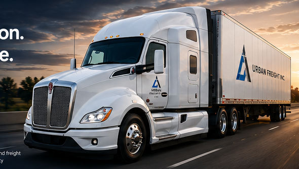

Refrigerated & Dry Van Freight
Built on Communication.
Driven by Performance.
Urban Freight Inc. is an ownership-involved carrier providing reliable reefer and dry van service across the U.S. Live tracking on every truck. On-time, every time.
▣
Modern Fleet2024 Kenworth T680s & late-model trailers
⌖
Live TrackingReal-time GPS on every truck
✓
Safety FirstOur drivers and freight are our priority

♨
Reefer Freight
Temperature-controlled freight with documented communication.
◇
Dry Van Freight
Reliable dry van coverage for standard and time-sensitive loads.
●
Live GPS Tracking
24/7 visibility with live GPS tracking on all trucks.
👥
Ownership-Involved
Direct communication and accountability from people who care.
What we move
Built around accountable carrier service.
Simple promise: the load gets handled professionally, the updates stay clear, and the equipment fits the freight. Urban Freight runs refrigerated and dry van freight with a direct dispatch workflow.
Primary lanes
Strategic lanes.
Maximum coverage.
Our core lanes are built for consistency, efficiency, and recurring opportunities.
▰
CA – TXRegular Round Trips▰
CA – GALong-Haul Coverage▰
CA – NJEast Coast Lanes▰
CA – FLReefer & Dry Van▰
CA – MDRecurring Freight